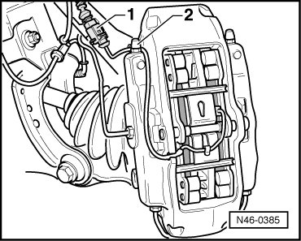
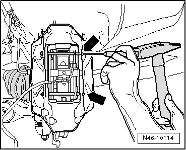
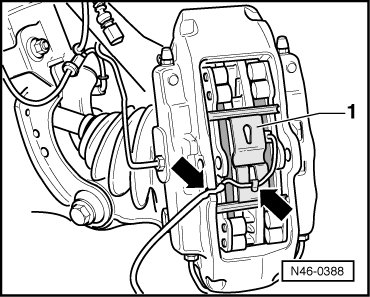
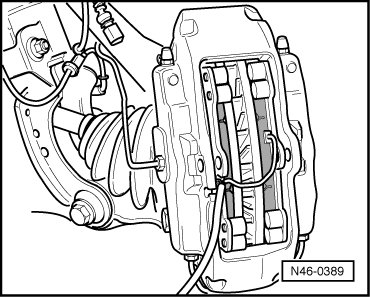
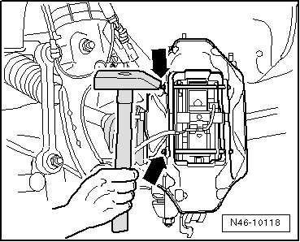

17" (1LE) Caliper
Brake Pads
Special tools, testers and auxiliary items required
• Piston resetting tool (T10145)
Removing
When removing, mark brake pads that will be used again. Install in the same position, otherwise braking effect will be uneven!
- Remove wheels and tires.
- Disconnect the connector - 1 - for the brake pad wear indicator.

- Remove dust cap - 2 - and remove brake pad wear indicator wire.
- Drive out pad retaining pins - arrows -.

- Remove wire for brake pad wear indicator - arrows - out of brake caliper housing and out of retaining spring - 1 -.

- Remove retaining spring.
Before pressing brake pads back, remove some brake fluid from the reservoir using a bleeder bottle. Otherwise, especially if reservoir has been topped off, fluid will overflow and cause damage.
- Press brake pads off brake disc and remove from brake caliper.

- If brake pads are to be replaced, carefully remove contact sensor with brake pad wear indicator wire from brake pads and check for damage.
Reuse undamaged contact sensors and wires.
Cleaning
CAUTION!
Do not use compressed air on the brake system components, the dust produced is harmful to your health!
- Clean brake caliper.
Use only appropriate solvents for cleaning brake caliper.
Installing
Before pressing pistons into cylinder using piston resetting tool, brake fluid must be removed from the brake fluid reservoir. Otherwise, especially if reservoir has been topped off, fluid will overflow and cause damage.
- Press pistons back.
- Carefully install brake pad wear indicator wire contact sensor in new brake pads.
- Insert brake pads into brake caliper.
- Insert retaining spring - 1 -.
- Install wire for brake pad wear indicator below tab of retaining spring and in brake caliper housing - arrows -.
- Press retaining spring down and place pad retaining pin in brake caliper.
- Drive pad retaining pin into brake caliper until seated.

- Connect connectors - 1 - of brake pad wear indicator in bracket of wheel bearing housing.
- Secure wire of brake pad wear indicator with dust cap - 2 - to bleeder valve.
- Install wheels and tires.
Tightening specification for wheel bolts.
• After replacing brake pads, press brake pedal firmly several times with vehicle stationary so that the brake pads are properly seated in their normal operating position.
• Check brake fluid level after replacing brake pad.